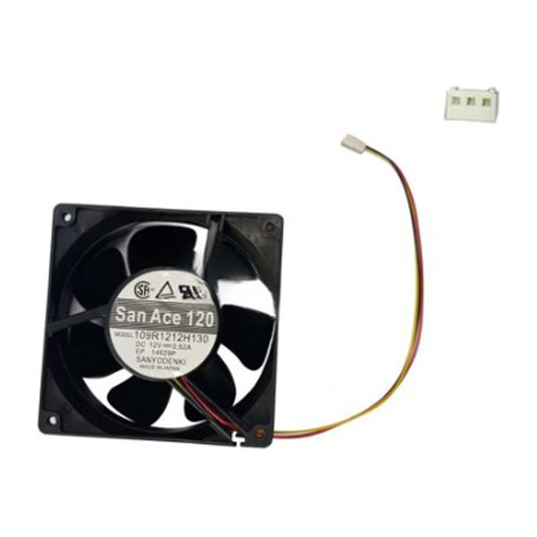

Parts › Electrical › 52610-401

Available
Email for a quote
Nichiyu 52610-401 Fan
| OEM part number | 52610-401 |
| Fits | Nichiyu |
| Models / notes | FB10/25PN-75 120*120*38(12V) |
| Category | Electrical |
| Type | Aftermarket replacement |
Send us the quantity you need and we'll reply with pricing, usually within 24 hours. Not the exact part? We can source it. Send the part number or a photo.